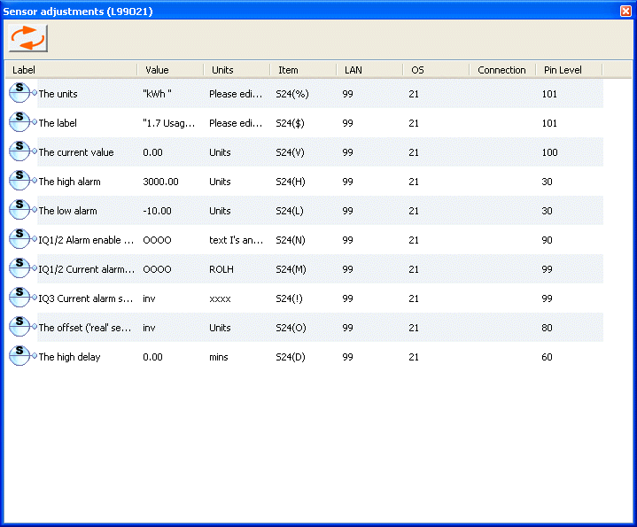

Right-click the value, and click Edit Item. The View as Points dialogue box is displayed.

Right-click the parameter that is to be changed, and click Adjust Point from the menu that is displayed. The Enter new value for dialogue box is displayed.

In the box enter the new value.
Click OK, to return to the View as Points dialogue box and then to close the View as Points dialogue box.